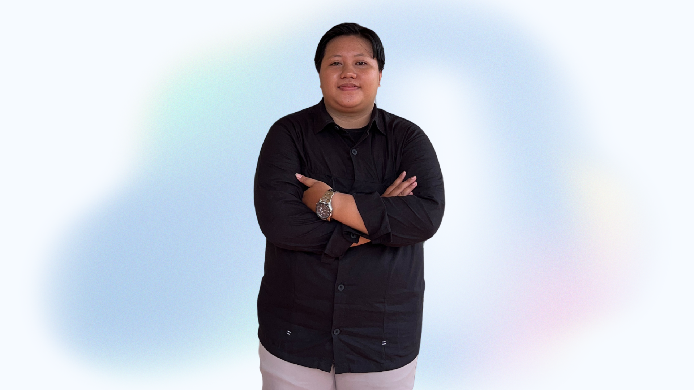
Memiliki kemampuan kepemimpinan, komunikasi, dan kerjasama tim yang baik. Memiliki kemampuan analisa dan pemikiran kreatif serta teliti. Mempunyai minat dalam bidang analisis data dengan bukti memiliki sertifikasi Big Data. Berharap dapat mengembangkan karir di bidang analisis data dengan memberikan kontribusi untuk mencapai tujuan bersama.
Fondasi akademik yang kuat dalam bidang teknologi dan komputer
Universitas Teknologi Yogyakarta
2021 - 2025
Mendalami pemrograman, analisis data, dan teknologi informasi. Fokus utama pada pengolahan data, visualisasi, dan penerapan machine learning dasar. Aktif mengikuti organisasi dan pelatihan yang mendukung pengembangan skill sebagai calon data analyst.
SMAN 2 Sarolangun
2018 - 2021
Mempelajari dasar-dasar ekonomi, sosiologi, dan geografi. Pembelajaran IPS melatih kemampuan berpikir logis, memahami fenomena sosial, serta analisis permasalahan yang menjadi dasar penguatan minat dalam bidang analisis data.
Kontribusi aktif dalam berbagai organisasi dan kepanitiaan
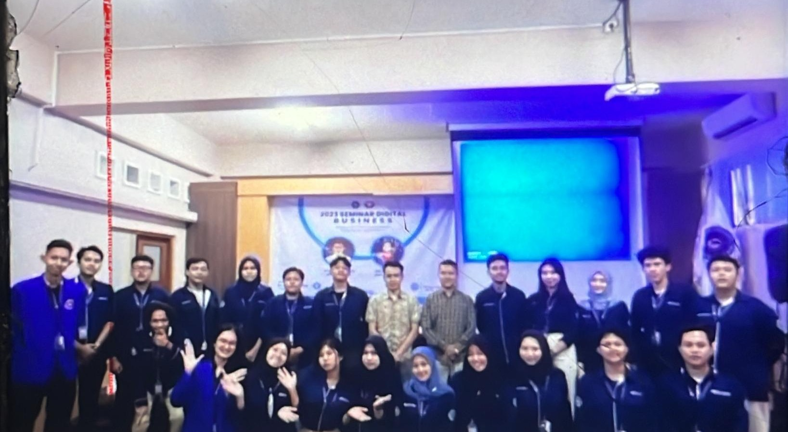
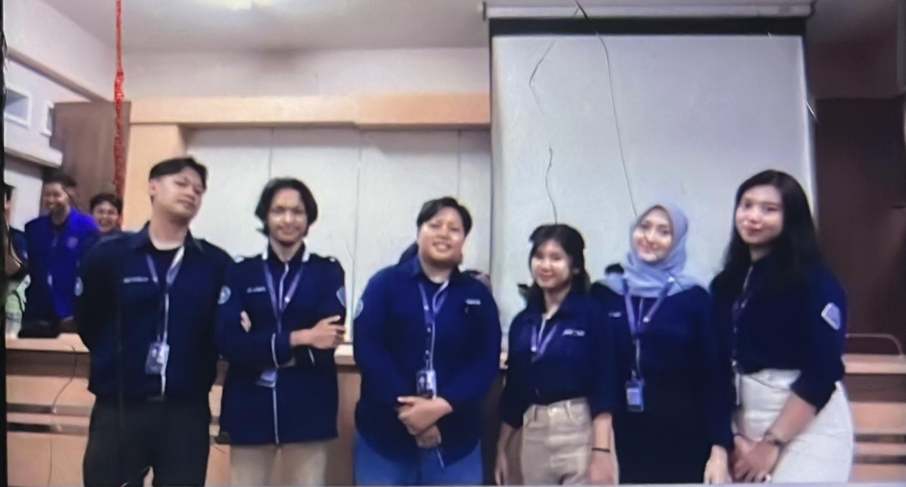
2023
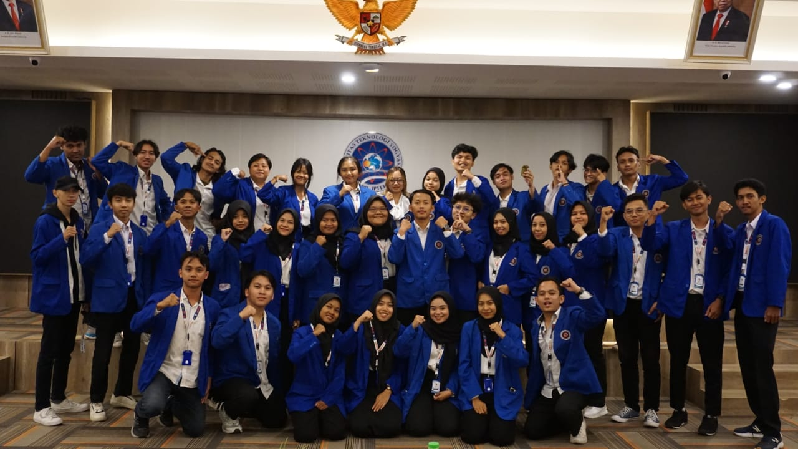
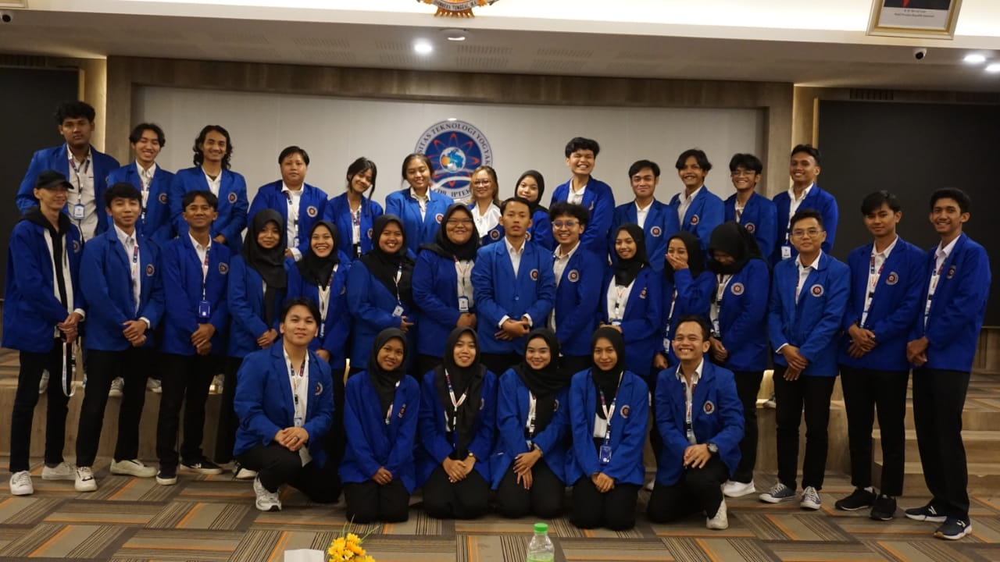
2024
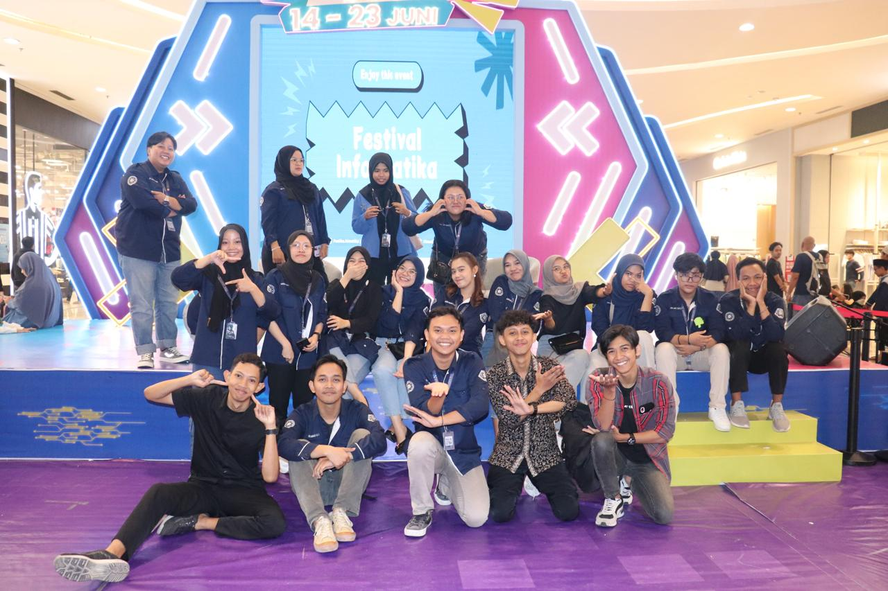
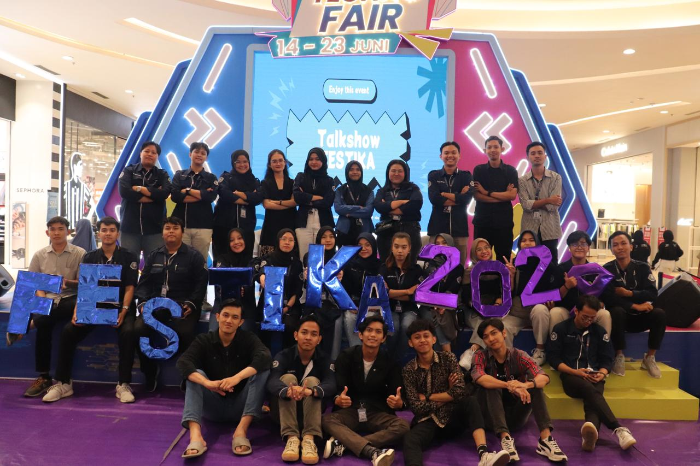
2024 - Divisi Dana Usaha
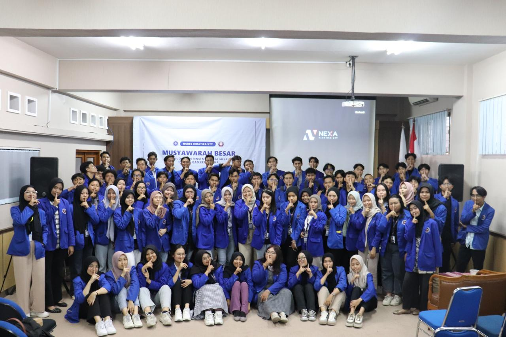
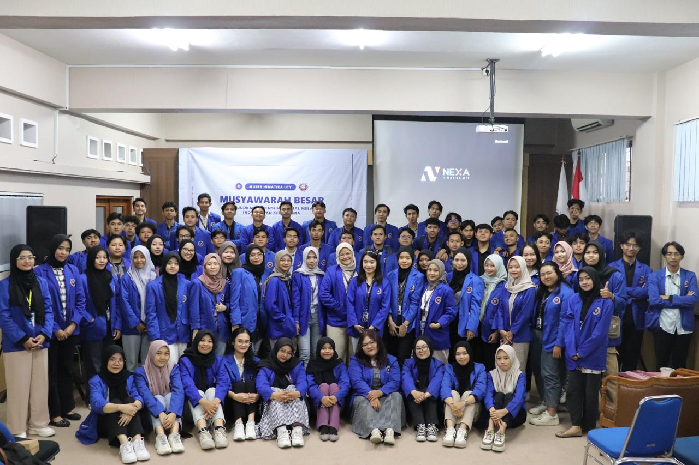
2023-2024
2023-2024
Kombinasi kemampuan teknis dan minat profesional saya
Data Analyst - Menganalisis data untuk mendapatkan insight bisnis
Data Science - Mengembangkan model prediktif dan machine learning
Visualisasi Data - Menyajikan data secara menarik dan mudah dipahami
Implementasi praktis ilmu data science dan AI melalui proyek pengembangan diri
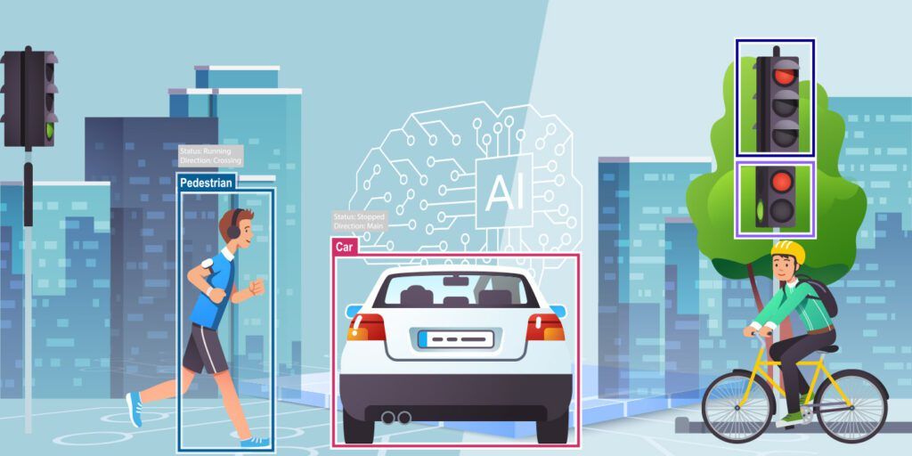
Implementasi deteksi pola secara real-time menggunakan live camera dengan teknik computer vision untuk identifikasi objek.
Membangun model artificial neural network sederhana untuk klasifikasi data dengan akurasi 92% pada dataset uji.
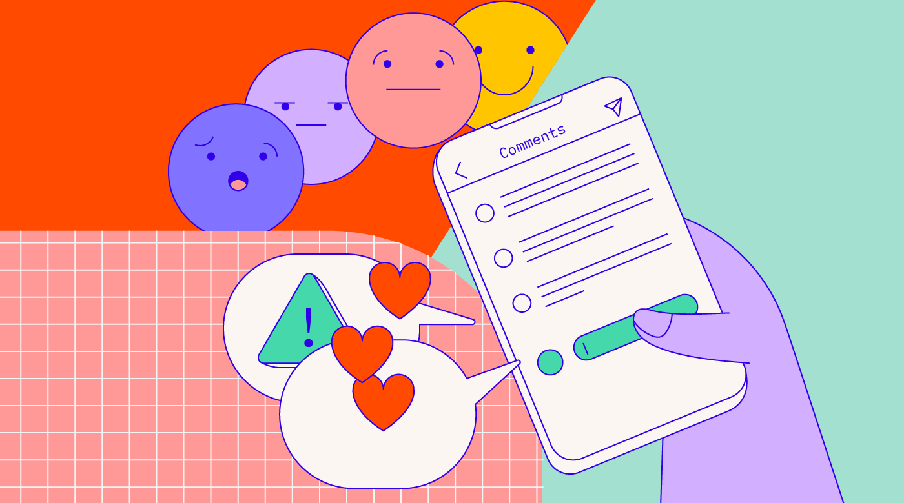
Mengolah data teks untuk menganalisis opini publik dengan teknik NLP dan machine learning mencapai akurasi 85%.
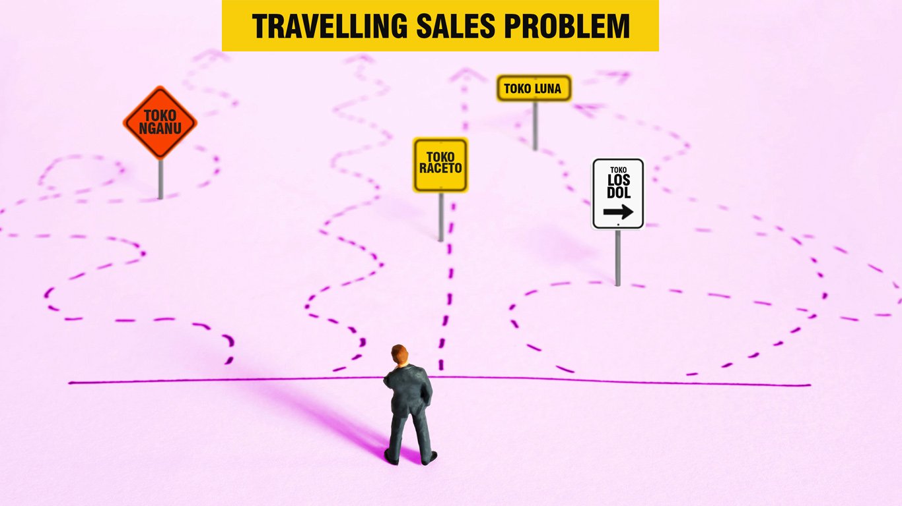
Implementasi algoritma genetika untuk menyelesaikan masalah TSP (Travelling Salesman Problem) dalam optimasi rute.
Praktik dasar Object-Oriented Programming dengan Python sebagai fondasi pengembangan aplikasi modular dan terstruktur.
Membuat visualisasi data interaktif untuk menyajikan insight dari dataset kompleks secara informatif dan menarik.